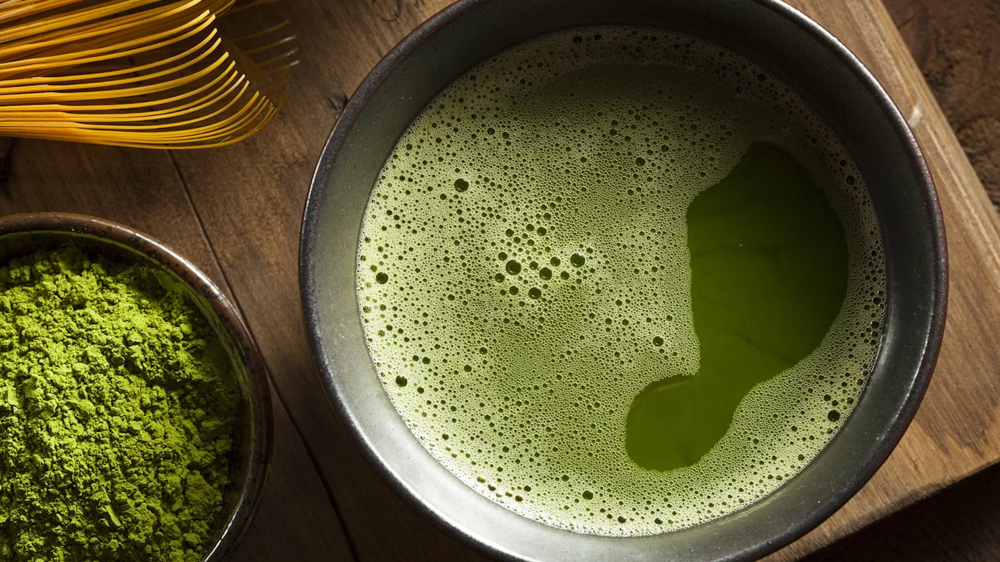
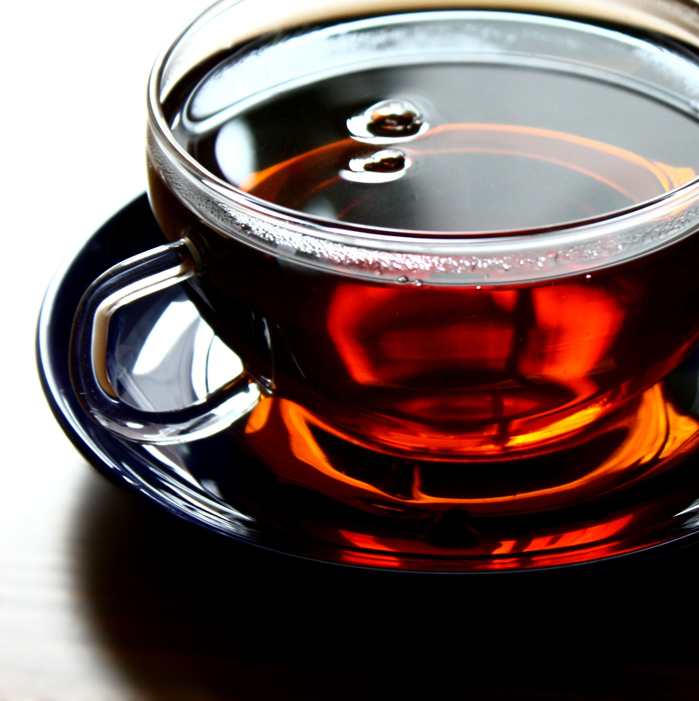

TEA | Coffee | Shake | Back to Homepage |
||
| Green Tea | Black Tea | Yellow |
|---|---|---|
|  Green tea is a type of tea that is made from Camellia sinensis leaves and buds that have not undergone the same withering and oxidation process used to make oolong teas and black teas. |  Black tea is a type of tea that is more oxidized than oolong, green, and white teas. Black tea is generally stronger in flavour than the less oxidized teas. |  Yellow tea is oxidize at a slow rate for a brief period before the tea is heated fully to denature the oxidizing enzymes, producing a far more mellow taste than is found in most green teas |